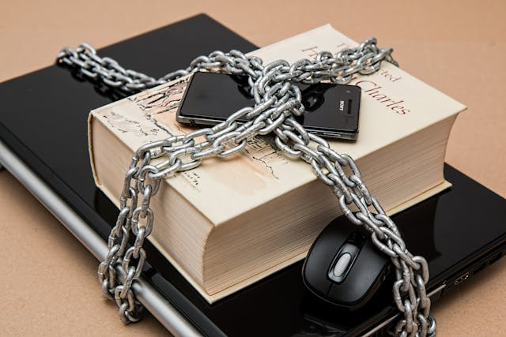
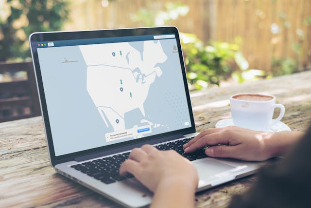

Consejos Generales
¡Mantente protegido en línea con estos consejos básicos!
Sigue estas recomendaciones para disfrutar de una experiencia segura en internet:
- 🔐 Usa contraseñas fuertes: Crea contraseñas largas y únicas para cada cuenta importante, combinando letras, números y símbolos.
- ⚠️ Desconfía de los enlaces sospechosos: No abras enlaces o archivos adjuntos de fuentes desconocidas, podrían contener amenazas.
- 🔒 Mantén tu software actualizado: Instala las últimas actualizaciones de seguridad para tu sistema operativo, navegador y programas.
- 🛡️ Utiliza un antivirus confiable: Protege tu dispositivo de virus, malware y otras amenazas con un buen software antivirus.
- 👀 Revisa tu privacidad en línea: Configura tus perfiles y ajustes de privacidad en redes sociales y servicios en línea.
- 💳 Protege tus datos financieros: Sé cauteloso al compartir información bancaria o de tarjetas de crédito en línea.
- 🚫 Evita las descargas no autorizadas: Descarga software o archivos únicamente de fuentes confiables y oficiales.
- 🔄 Realiza copias de seguridad: Respalda regularmente tus archivos importantes en caso de pérdida o daños.
¡Sigue estas sencillas recomendaciones y disfruta de una experiencia en línea segura y tranquila!
Protección de Contraseñas
¡Protege tus cuentas en internet con contraseñas fuertes!
Para crear una contraseña segura, sigue estos consejos:
- 📝 Usa una frase larga en lugar de una sola palabra. Por ejemplo: "MiPerritoJuguetónCorre"
- 🔢 Agrega números y símbolos a tu frase: "MiPerrit0Juguet$nCorr3"
- 🔀 Mezcla mayúsculas y minúsculas: "miPerrit0juGUet$nCorr3"
- ❌ Evita usar datos personales como tu nombre, fecha de nacimiento o palabras comunes del diccionario.
- 🔑 Usa una contraseña diferente para cada cuenta importante.
- 📁 Considera utilizar un administrador de contraseñas para guardarlas de forma segura.
- 🔄 Cambia tus contraseñas cada cierto tiempo, al menos una vez al año.
- 🤫 Nunca compartas tus contraseñas con nadie, ni siquiera con amigos o familiares.
¡Sigue estos sencillos pasos y tus cuentas estarán más protegidas!
Seguridad en Redes Sociales
h2>Seguridad en redes sociales¡Navega y comparte de forma segura!
Sigue estos sencillos consejos para estar protegido en las redes sociales:
- 👤 Configura tu privacidad: ajusta quién puede ver tus publicaciones y mantén tus datos personales privados.
- 🤝 Acepta amigos con cuidado: verifica que sean personas reales y conocidas antes de aceptar solicitudes.
- 🔐 Usa contraseñas fuertes: crea contraseñas seguras y diferentes para cada red social.
- ⚠️ Desconfía de enlaces sospechosos: pueden ser intentos de robo de información (phishing).
- 📸 Piensa antes de publicar: evita compartir contenido inapropiado o comprometedor.
- 🌍 Cuida tu ubicación: desactiva la geoubicación y no etiquetes lugares sensibles.
- 🙂 Sé amable: mantén una actitud respetuosa y evita discusiones agresivas o acoso.
¡Diviértete y comparte con tranquilidad siguiendo estas recomendaciones!
Protección contra el Malware
¡Mantén tu dispositivo a salvo de amenazas!
El malware son programas maliciosos que pueden dañar tu computadora o robar tus datos. Sigue estos consejos para protegerte:
- 🛡️ Usa un buen antivirus: instala y mantén actualizado un programa antivirus confiable en tu dispositivo.
- ⚠️ Desconfía de archivos sospechosos: no abras archivos adjuntos o descargas de fuentes desconocidas.
- 🔑 Mantén tus contraseñas seguras: utiliza contraseñas fuertes y diferentes para cada cuenta importante.
- 🔄 Actualiza regularmente: instala las últimas actualizaciones de seguridad para tu sistema operativo y programas.
- 🔍 Revisa tu dispositivo: realiza escaneos periódicos con tu antivirus para detectar y eliminar amenazas.
- 📧 Cuida tus correos: no abras enlaces o archivos adjuntos sospechosos en tus correos electrónicos.
- 🚫 Evita sitios web inseguros: navega únicamente en sitios web confiables y evita descargas no autorizadas.
¡Sigue estas recomendaciones y disfruta de una experiencia en línea segura y libre de amenazas!
Recursos y Enlaces Útiles
Descubre más herramientas y consejos sobre seguridad
Explora estos enlaces para seguir aprendiendo y protegerte mejor en línea:
Herramientas:
- 📁 Administrador de contraseñas: Una herramienta esencial para la seguridad en línea, un administrador de contraseñas almacena y administra sus contraseñas de manera segura, evitando que las tenga que recordar o escribir. Algunas opciones populares incluyen LastPass, 1Password y Bitwarden.
- 🛡️ Software antivirus y anti-malware: Proteja su dispositivo de virus, malware y otras amenazas en línea con un software antivirus y anti-malware actualizado. Algunas opciones populares incluyen Kaspersky, Norton y Bitdefender.
- 🌐 VPN (Red Privada Virtual): Una VPN encripta su tráfico de Internet y lo enruta a través de un servidor en otra ubicación, lo que le ayuda a proteger su privacidad y anonimato en línea. Algunas opciones populares incluyen NordVPN, ExpressVPN y Surfshark.
- 🔒 Encriptación de archivos: Proteja sus archivos confidenciales de accesos no autorizados encriptándolos. Algunas opciones populares de software de encriptación incluyen VeraCrypt, 7-Zip y WinRAR.
¡Explora estos recursos y mantente al día con las últimas herramientas y recomendaciones de seguridad!